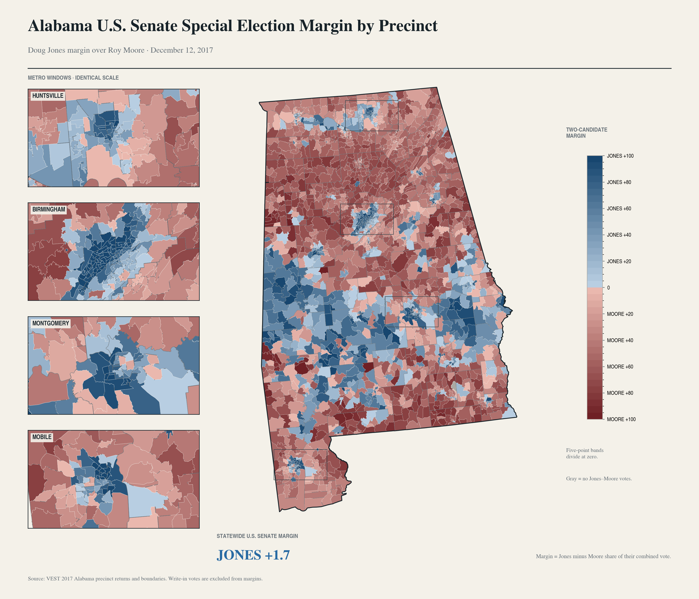

A closer look
at the vote.
I’m Jackson. I make maps that explore how places vote, how coalitions change, and what the geography can tell us.
Precincts, counties, and districts.
Historical elections and new questions.

The map collection
Results, shifts, turnout, and the work behind the maps.
No maps match these filters.
Try a different search or clear the filters to see the full collection.
Every map has
a method behind it.
I work with election returns and geographic data to make electoral patterns easier to see. This collection brings together precinct maps, historical comparisons, district studies, design experiments, and companion analysis.
Read the geography carefully
Changing precinct boundaries need reconciliation. Missing returns and unmatched areas matter. The source notes attached to each collection describe the assumptions and limitations behind the work.
Scenarios are hypothetical
Counterfactual and modeled maps explore conditional assumptions. They are labeled as scenarios and should not be read as observed results or forecasts. Aggregate patterns do not identify individual voters.